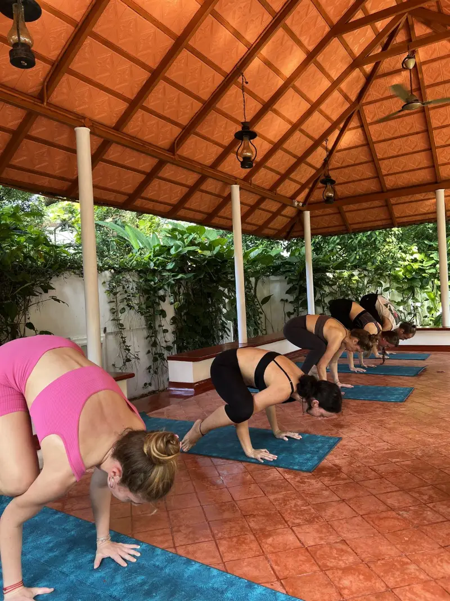

In short
For your first yoga class, arrive ten minutes early on an empty stomach, wear clothes you can bend in, and tell the teacher you are new and about any injuries. Expect to rest often, soften or skip anything that hurts, and ignore the person next to you. Some stiffness the next day is normal.
The message I receive most often before someone's first class is some version of "I'm not flexible, is that a problem?" It is not. Nobody arrives flexible; flexibility is something practice gives you, not something it requires.
Across more than five thousand classes, I have noticed that beginners worry about the wrong things. They worry about touching their toes. The things that actually shape a first class are simpler: what you ate, whether you told the teacher about your knee, and whether you let yourself rest. This guide covers those. For our class times and prices in Fort Kochi, see the guide to yoga in Fort Kochi.
- Arrive
- 10 minutes early
- Eat
- 2–3 hours before; light is fine
- Wear
- Clothes you can bend in
- Tell the teacher
- New? Injuries? Pregnant?
- During class
- Rest whenever you need to
- Next day
- Mild stiffness is normal
Before class: the three things that matter
1. Eat lightly, and early
Leave about three hours after a full meal, or two after something light like fruit or a small breakfast. Twisting and folding on a full stomach is uncomfortable. Arriving starving is not ideal either: a banana an hour or two before is fine. Drink water through the day rather than a litre just before class.
2. Wear clothes you can bend in
Something breathable that stays in place when you fold forward or lie down. In Kerala's heat, cotton is comfortable. We have written a full guide to what to wear, and class etiquette in India.
3. Tell the teacher
In the first minute, tell the teacher it is your first class, and mention anything relevant: a bad back or knee, recent surgery, high blood pressure, pregnancy, dizziness. You do not need to explain in detail. It quietly changes what you will be offered, and a good teacher will keep an eye on you without making a fuss.
What happens in the room
Our classes move in a steady order: an opening relaxation lying down, to settle the body and mind; breathing practice; sun salutations; postures for all levels, held with rest between; and a deep final relaxation. You will not know the names of anything, and you do not need to. Watch, then follow.
- Position yourself where you can see the teacher, not hidden in a back corner.
- Breathe through your nose. If you need to breathe through your mouth, you are going too fast; slow down or rest.
- The teacher may adjust you with a hand. If you would rather not be touched, simply say so. It is a normal request.
- The final relaxation is not optional. Stay for it. It is where much of the benefit settles in.
When a posture is too hard
Learn this distinction on day one and it will serve you for life: effort and stretch are fine; sharp, pinching, electric or joint pain is not.
| You feel… | Do this |
|---|---|
| A strong stretch in a muscle | Stay, breathe, ease off slightly if it builds |
| Sharp or pinching pain, especially in a joint | Come out of the posture straight away |
| Out of breath | Rest in child’s pose or lie down |
| Dizzy or light-headed | Sit or lie down, and tell the teacher |
| Unable to reach the floor or your feet | Bend your knees — it is not cheating |
And the hardest rule for most beginners: ignore the person next to you. They may have practised for ten years, or they may be pushing themselves into an injury. Neither is your concern.

Is a two-hour class too much for a beginner?
It is the question people ask about our classes most, and the answer is no. A traditional two-hour class is long because it is slow, not because it is intense. There is breathing practice at the start, rest between postures, and a long relaxation at the end. As one student wrote in a review of our class, a good part of those two hours is spent lying down.
You can rest at any point. Nobody will ask you why.
After class
- Drink water, and eat something light when you feel hungry.
- Expect some stiffness for a day or two, especially in the hamstrings, shoulders and core. That is normal muscle soreness, and a gentle walk helps.
- Come back the next day if you can. A second class the following day often feels easier than the first, because you know what to expect.
- Sharp or lasting pain in a joint is different. Rest it, and see a doctor if it does not settle.
How long until it gets easier?
Honestly: the breath and the mind usually change first, and many people say they feel calmer within the first few classes. The body takes longer. Noticeable change in flexibility and strength usually comes over weeks of regular practice, not days.
Regularity matters far more than intensity. Three gentle classes a week will take you further than one exhausting one. If you are staying in Fort Kochi for a few days, coming every morning is the fastest way to feel what yoga actually does — and if you stay more than a week, your classes are 30% off.
Common worries, honestly answered
| Worry | The honest answer |
|---|---|
| “I’m not flexible.” | Nobody is at the start. That is what the practice is for. |
| “I’m not fit.” | A slow Hatha class meets you where you are. Rest as often as you need. |
| “I’m too old.” | People start yoga at every age. Tell the teacher your age and history, and go gently. |
| “I’ll be the only beginner.” | In a mixed-level class, you are rarely the only one, and nobody is watching you. |
| “I don’t know the Sanskrit names.” | You do not need them. Plain English comes first. |
| “Yoga is mostly for women.” | Plenty of men practise, in India and everywhere else. Stiff hamstrings are not a barrier; they are the reason to start. |
If you would rather start one-to-one before joining a group, a few private sessions are a gentle way in.
Practise with us in Fort Kochi
Traditional two-hour Hatha Yoga classes, mornings 7:30–9:30 am and afternoons 3:30–5:30 pm. All levels, no booking needed. Message us for the day’s schedule.
Once you have been to a first class, the next question is usually how often to go. Here is a teacher’s answer.
Common questions
What should I do before my first yoga class?
Eat lightly two to three hours before, drink water through the day, wear clothes you can bend in, arrive about ten minutes early, and tell the teacher that it is your first class and about any injuries or health conditions.
What if I cannot do a yoga pose?
Do an easier version, bend your knees, or rest. Effort and stretching are fine, but come out of any posture that causes sharp or pinching pain. A good teacher will offer alternatives.
Is it normal to feel sore after yoga?
Yes. Mild stiffness for a day or two after your first classes is normal, especially in the hamstrings, shoulders and core. Sharp or lasting joint pain is not, and should be rested and checked by a doctor if it persists.
How many times a week should a beginner do yoga?
Two or three times a week is a good start, and gentle daily practice is fine if you rest when you need to. Regularity matters more than how hard each class is.
Can I join a class at Santhi Yoga with no experience?
Yes. Our classes in Fort Kochi are mixed-level, taught in English, and welcome complete beginners. Tell the teacher you are new when you arrive.
Should I tell the teacher about an injury?
Always, before the class starts. Mention injuries, recent surgery, high blood pressure, pregnancy or dizziness. It lets the teacher offer safer versions of postures without singling you out.